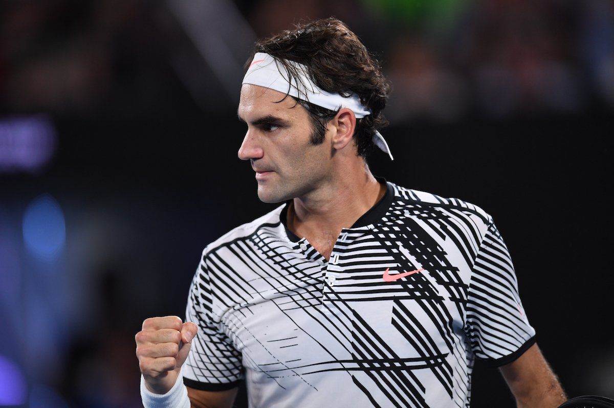

Federer at 2017 Australian Open Final
He is the greatest because:
- 18 Grand Slam titles overall
- 28 Grand Slam finals overall
- 3 Grand Slam titles per-year 3 times 2004, 2006–07
- 2 Grand Slam titles per-year 5 times 2004–07, 2009
- Reached all 4 Grand Slam finals 3 times (2006–07, 2009)
- 10 consecutive Grand Slam finals
- 302 weeks at World No.1 of the ATP rankings
- 237 consecutive weeks at World No.1 of the ATP rankings
Tears of joy for the champ #Federer #AusOpen pic.twitter.com/t048S5Spcm
— #AusOpen (@AustralianOpen) January 29, 2017
Tennis is a tough sport, there's no draws but if there was I'd be happy to share it with Rafa tonight.
Grand Slam tournament performance
| Tournament | Tournament Won |
|---|---|
| Australian Open | 2004, 2006, 2007, 2010, 2017 |
| French Open | 2009 |
| Wimbledon | 2003, 2004, 2005, 2006, 2007, 2009, 2012 |
| US Open | 2004, 2005, 2006, 2007, 2008 |